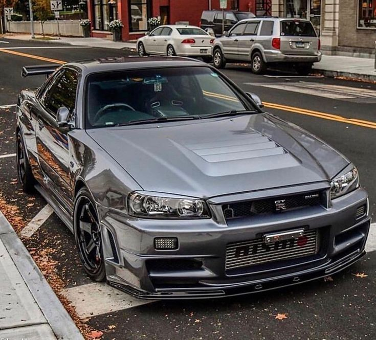

Jedno z naszych Aut
Jedne z najlepszych Aut Świata przy którym pracowaliśmy !!!!!
 Nissan Skyline GT-R Nismo. Każdy fan motoryzacji wie, że to auto wyjątkowe pod wieloma względami. Japońska technologia zamknięta w nadwoziu, które nie pozostawia złudzeń. Ostatni Skyline GT-R powstał w nadwoziu R34 i został zaprezentowany już ponad 15 lat temu
Nissan R34 to ostatni bezpośredni spadkobierca rodziny Skyline. Zaprezentowany w 1998 roku z miejsca stał się rynkowym przebojem. Był dostępny tak jak poprzednik jako 2-drzwiowe coupé oraz 4-drzwiowy sedan. Koncepcyjnie stanowił rozwinięcie idei poprzednika, ale został wzbogacony o charakter i detale zbliżone do generacji R32. Produkcję kontynuowano do 2002 roku.
Skyline R34 był najbardziej zaawansowanym technologicznie pojazdem oferowanym w okresie swojej produkcji przez koncern Nissan. Tylnonapędowe coupé, okrzyknięte przez media najładniejszym z rodziny Skyline, wymiarami przypominało swojego poprzednika (4580 mm długości, 1725 mm szerokości i tak jak R33 1340 mm szerokości).
Do nowego modelu Nissana oferowano unowocześnione jednostki napędowe. Pod maskę Skyline’a wrócił dostępny ostatnio w R32 silnik RB20DE. Dzięki przekonstruowaniu newralgicznych elementów rozwijał 140 KM i przystąpił do rodziny jednostek NEO. Przez długi czas była to najbardziej ekonomiczna 6-cylindrowa rzędówka na świecie, a występowała w duecie jedynie z 5-biegową przekładnią ręczną. Kolejną nowością oferowaną do R34 był także należący do NEO przeprojektowany RB25DET, który dzięki wielu modyfikacjom mechanicznym zyskał nie tylko na mocy, ale także na elastyczności i trwałości. 343 Nm potrafiły rozpędzić ważące teraz 410 kg auto do 100 km/h w około 6 s. W użyciu pozostał także wolnossący, znany z poprzednich generacji 2,5 l RB25DE, nadal dysponujący mocą 190 KM i podobnie jak poprzednicy oferowany z opcją wyboru napędu na 4 koła.
Skrzynie biegów proponowane do generacji R34 to poza obecnym w najsłabszej wersji 5-stopniowym manualem także zupełnie nowy, zastępujący wszystkie skrzynie automatyczne 4-biegowy Tiptronic.
Zawieszenie przewidziane do ostatniego Skyline'a należało do twardych. Mocno usztywnione w stosunku do poprzednika nastawy zapewniły autu jeszcze lepszą przyczepność, a kierowcy doskonałe wyczucie drogi.
Wnętrze Nissana zaprojektowano na nowo, dzięki czemu zyskało na funkcjonalności, a użyte materiały charakteryzowały się poprawną jakością. Nad nowoczesnością nadal dominowała jednak prostota.
Wprowadzając nowy model, Nissan nie zapomniał o jego najmocniejszej wersji. Kontynuator serii GT-R nawiązywał bardziej do wyścigowego charakteru R32 niż cywilnego i ugrzecznionego R33. Obniżone i jeszcze bardziej utwardzone zawieszenie w połączeniu z układem przeniesienia napędu 4x4 ATTESA i systemem tylnych kół skrętnych HICAS dawało ogromną przyjemność z pokonywania każdego zakrętu. Silnik RB26DETT zyskał wigor dzięki maksymalnemu momentowi obrotowemu o wartości 400 Nm, dostępnemu w znacznie szerszym zakresie obrotów. Do tej wersji producent oferował wyłącznie nowy, 6-stopniowy manualny mechanizm firmy Getrag o wyjątkowo sportowej charakterystyce. Przyspieszenie do pierwszych 100 km/h na poziomie 5 s czyni go groźnym zawodnikiem na rynku samochodów sportowych.
Nissan Skyline R34 GT-R jest najbardziej poszukiwanym pojazdem kiedykolwiek zbudowanym w Japonii. Jego ceny na rynku wtórnym, wynikające z małej podaży, nierzadko przekraczają kwoty, za które można nabyć nowe, sportowe auta wysokiej klasy.